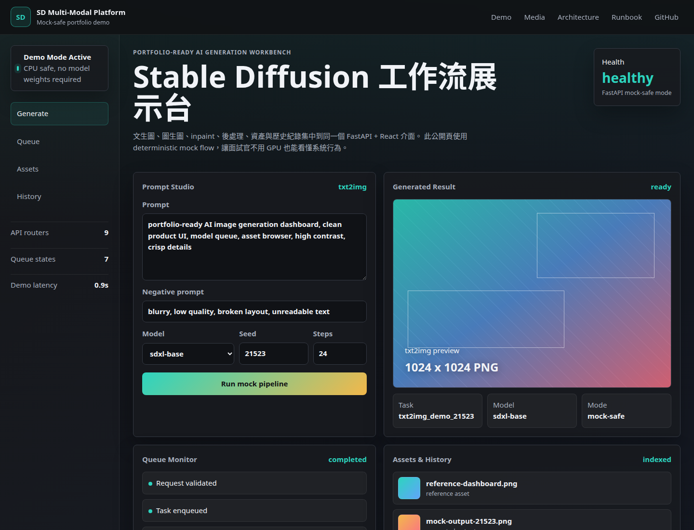
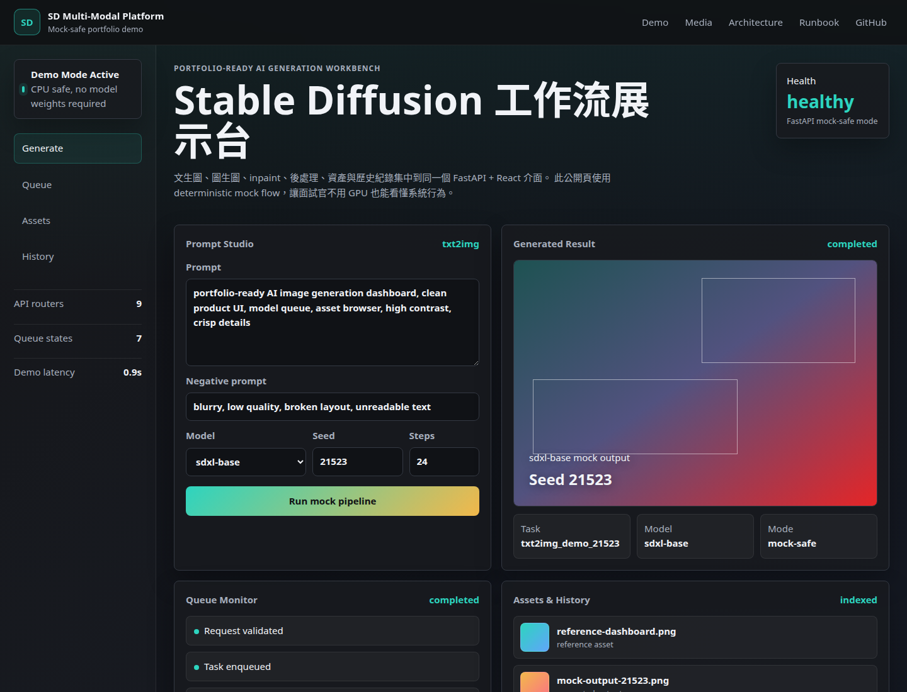
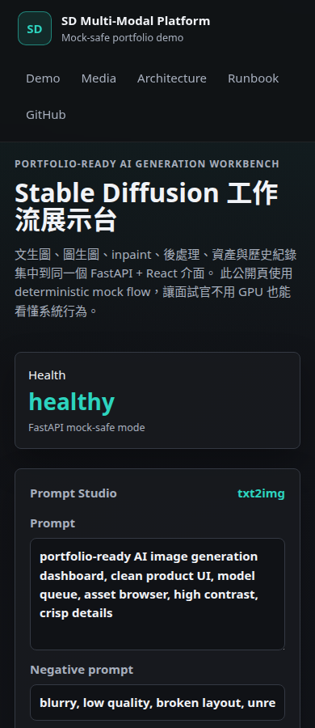

reference-dashboard.pngreference asset
Portfolio-ready AI generation workbench
Stable Diffusion 工作流展示台
文生圖、圖生圖、inpaint、後處理、資產與歷史紀錄集中到同一個 FastAPI + React 介面。 此公開頁使用 deterministic mock flow，讓面試官不用 GPU 也能看懂系統行為。
Health
healthy
FastAPI mock-safe mode
Generated Result
ready
txt2img preview
1024 x 1024 PNG
Queue Monitor
completed
- Request validated
- Task enqueued
- Mock renderer completed
- History + metadata saved
Assets & History
indexed
mock-output-21523.pnggenerated output
history-record.jsonrerunnable metadata
Demo evidence
可直接截圖與錄影展示的狀態畫面



System map
從 prompt 到 output 的可觀測生成管線
React Workbench
FastAPI v1 Routers
Model Registry
Redis/Celery Queue
Outputs + Assets + History
沒有 GPU、模型權重或 Redis 時仍可展示核心 API 與 UI flow。
選配服務缺席時 API 保持可啟動，相關端點回傳明確狀態。
提供截圖、錄影、README 架構圖與可重跑 smoke tests。
Interview flow
建議展示流程
先用此頁展示產品本體，再切到 README 的 Mermaid 架構圖，最後本機啟動 mock backend 執行 smoke test，說明 full mode 如何接上真模型與 Redis/Celery worker。
MOCK_GENERATION=true MINIMAL_MODE=true DEVICE=cpu \
uvicorn app.main:app --host 0.0.0.0 --port 8000
python scripts/smoke_api.py
cd frontend/react && npm run typecheck && npm run build